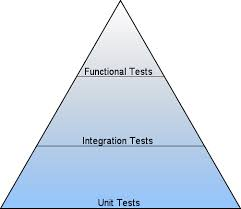
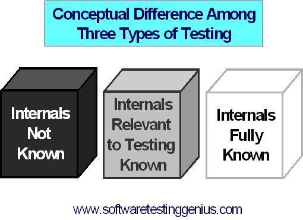
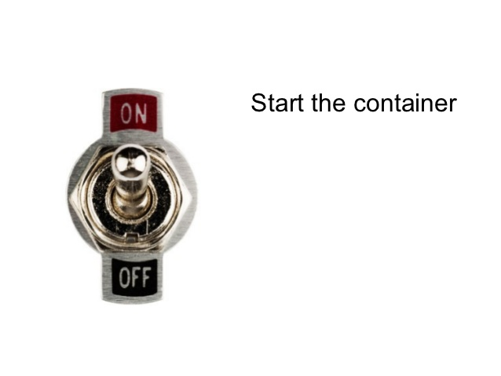
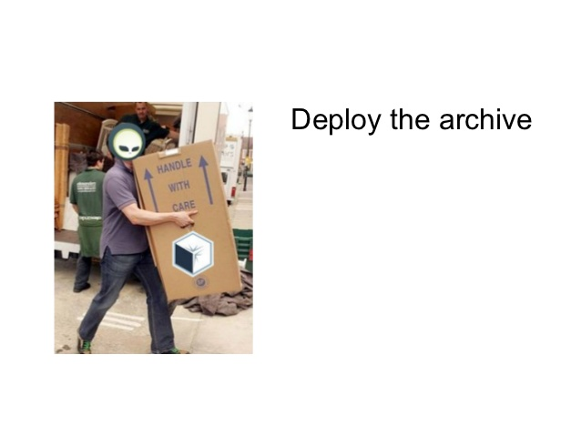
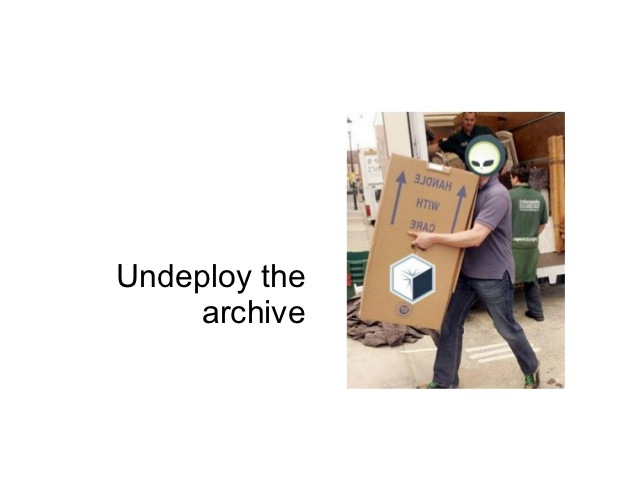
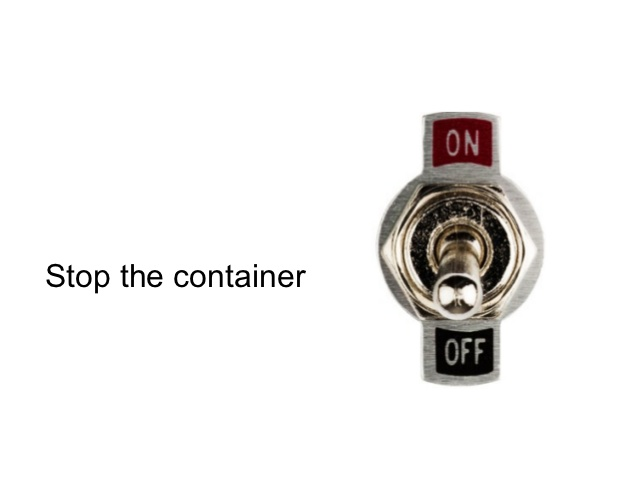

Arquillian
Testanto aplicações JavaEE dentro do container
Apresentação por
Rafael Pestano
Desenvolvedor Java
Procergs
Agenda
- Tipos de teste
- Introdução ao Arquillian
- Containers suportados
- Tipos de containers
- Modos de execução
- Extensões
- Exemplo
- Ciclo de vida dos testes
- Hands on(taca-le pau)
fontes disponíveis em
Tipos de teste

Tipos de teste

Introdução ao Arquillian
Introduçao ao Arquillian
- testes de integração tão fáceis quanto unitários
- leva o teste para o "runtime"
- mesmo teste deve rodar em múltiplos containers
- injeção de dependência e recursos nos testes(test enrichers)
- micro deployments (evita build e isola componentes)
- gerencia o container
Containers suportados
- Jboss/wildfly
- Glassfish
- Tomcat
- Jetty
- Spring
- Weld
- Android
- Weblogic
- e provavelmente mais alguns
Tipos de containers
- Embbeded
- Managed
- Remote
Modos de execução
- In container
- Client
- Mixed mode
Plataforma extensível
- Core: base para outras extensões, responsável pelo ciclo de vida do container, deployment e da injeção de dependência e recursos nos testes.
- Persistence: gerenciamento da camada de persistencia via DBUnit
- Drone: Integração com o selenium e gerenciamento do webdriver.
- Graphene: extende o selenium provendo funcionalidades como esperas automaticas, fragmentos de páginas, seletores adicionais(jquery, angular), etc...
- JBehave: testes de aceitação orientados ao comportamento dentro do container.
Plataforma extensível
- Cukespace: teste de aceitação no container usando o Cucumber
- Warp: habilita testes caixa cinza
- Recorder: gravação dos testes com video e imagem.
- Rest: testes caixa branca para endpoints REST
- JaCoCo: cobertura de código.
- e provavelmente outras.
Ciclo de vida dos testes

Ciclo de vida dos testes

Ciclo de vida dos testes

Ciclo de vida dos testes

Ciclo de vida dos testes
